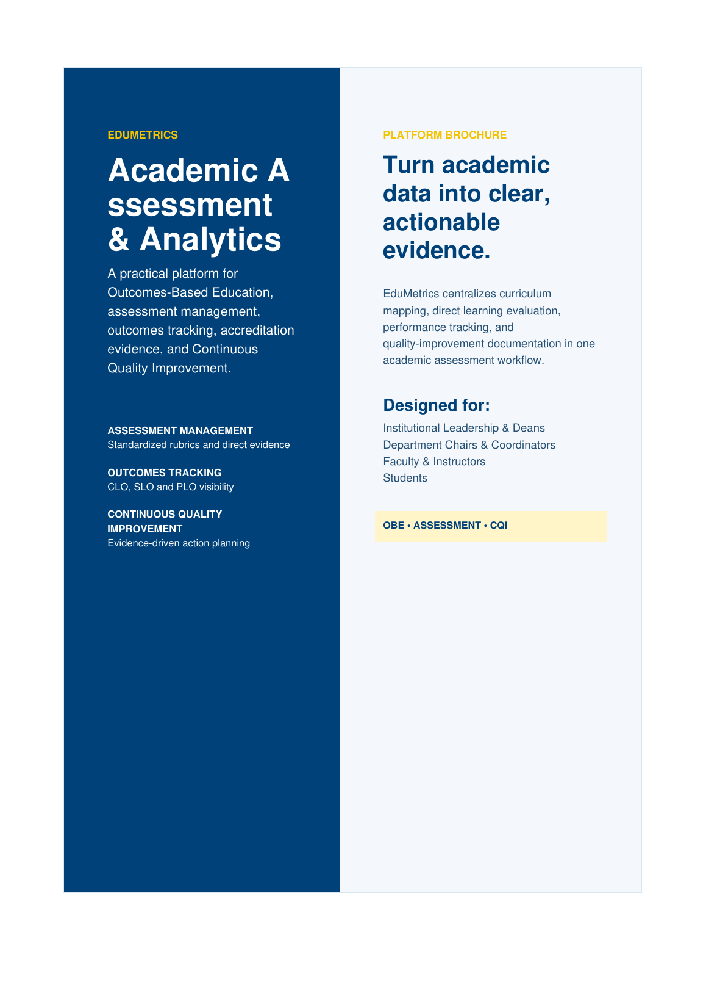
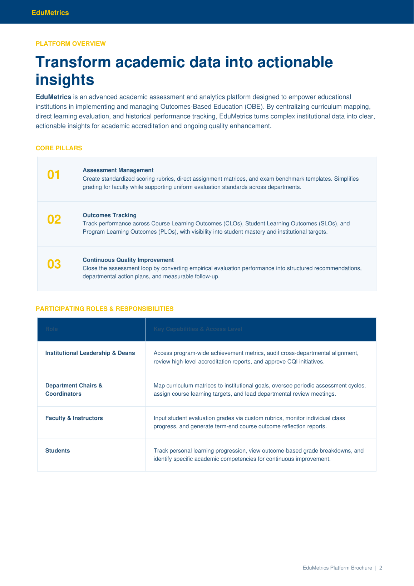
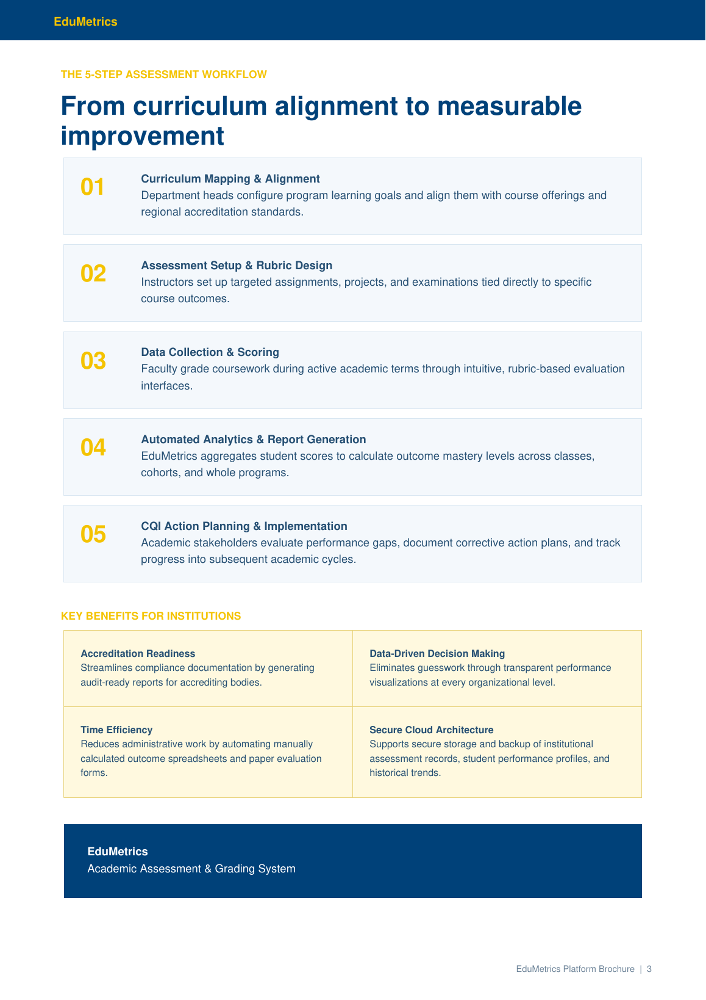

Assessment Management
Create standardized scoring rubrics, direct assignment matrices, and exam benchmark templates while supporting consistent evaluation standards across departments.
Academic Assessment & Grading System
A concise introduction to the EduMetrics academic assessment and analytics platform, including its core pillars, participating roles, assessment workflow, and institutional benefits.

Brochure PreviewEduMetrics is an advanced academic assessment and analytics platform designed to empower educational institutions in implementing and managing Outcomes-Based Education (OBE). By centralizing curriculum mapping, direct learning evaluation, and historical performance tracking, EduMetrics turns complex institutional data into clear, actionable insights for academic accreditation and ongoing quality enhancement.
Create standardized scoring rubrics, direct assignment matrices, and exam benchmark templates while supporting consistent evaluation standards across departments.
Track performance across Course Learning Outcomes, Student Learning Outcomes, and Program Learning Outcomes with clear visibility into student mastery and institutional targets.
Close the assessment loop by converting evaluation performance into structured recommendations, departmental action plans, and measurable follow-up activities.
| Role | Key Capabilities & Access Level |
|---|---|
| Institutional Leadership & Deans | Access program-wide achievement metrics, audit cross-departmental alignment, review high-level accreditation reports, and approve CQI initiatives. |
| Department Chairs & Coordinators | Map curriculum matrices to institutional goals, oversee periodic assessment cycles, assign course learning targets, and lead departmental review meetings. |
| Faculty & Instructors | Input student evaluation grades through custom rubrics, monitor individual class progress, and generate term-end course outcome reflection reports. |
| Students | Track personal learning progression, view outcome-based grade breakdowns, and identify specific academic competencies for continuous improvement. |
Department heads configure program learning goals and align them with course offerings and regional accreditation standards.
Instructors set up targeted assignments, projects, and examinations tied directly to specific course outcomes.
Faculty grade coursework during active academic terms through intuitive, rubric-based evaluation interfaces.
EduMetrics aggregates student scores to calculate outcome mastery levels across classes, cohorts, and whole programs.
Academic stakeholders evaluate performance gaps, document corrective action plans, and track progress into subsequent academic cycles.
Streamlines compliance documentation by generating audit-ready reports for accrediting bodies.
Reduces guesswork by providing transparent performance visualizations across organizational levels.
Reduces administrative work by automating manually calculated outcome spreadsheets and paper evaluation processes.
Supports secure storage of institutional assessment records, student performance profiles, and historical trends.


PDF • Platform Brochure • EduMetrics